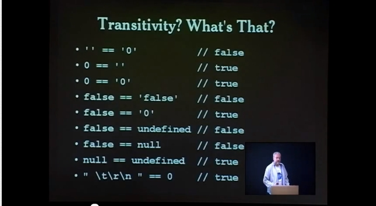

00. Link - Monitoring unused CSS by unleashing the raw power of the DevTools Protocol
01. Link - JavaScript Performance Optimization Tips: An Overview
02. Link - Basic javascript algorithms toolbox: starter kit
03. Link - Implementing The Sieve Of Eratosthenes in JavaScript
04. Link - Taming architecture complexity in V8 — the CodeStubAssembler
05. Link - I slipped on JavaScript’s banana peel
06. Link - An Introduction to Speculative Optimization in V8
07. Link - Rendering performance from the ground up (Martin Splitt)
08. Link - Contributing to ECMAScript
09. Link - The Modern JavaScript Tutorial
10. Link - Using a logbook to improve your programming
11. Link - A comprehensive guide to font loading strategies
